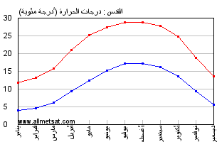
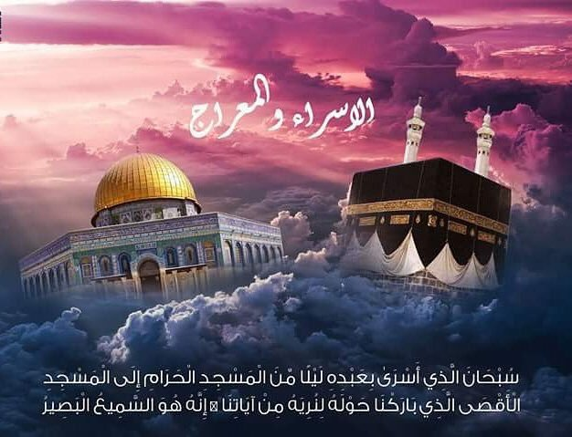

تعد القدس عاصمه الدولة الفلسطينية و تقع في قلبها , و ترتفع عن سطح البحر 750 مترا, و تبلغ مساحتها 19331 كيلو مترا, و القدس بالنسبة للدولة الفلسطينية رمز صمودها امام العدوان, و هي بالغه من الناحية الدينية و السياحية, و تعتبر من اقدم مدن العالم. و يبلغ عمرها تقريبا حوال5022
يُعتبر مناخ مدينة القدس شبه استوائيّ، إذ يكون شبه جافّ وحارّ صيفاً وبارداً ماطراً شتاءً، كما يكون متوسّط هطول الأمطار السنويّ 500 ملم، أمّا متوسّط درجة الحرارة فيبلُغ 9 درجات مئويّة في شهر كانون الثاني، و23 درجة مئويّة في شهر تمّوز
و القرى التي تقع في القدس هي : (أبو ديس، أبو غوش، إشوع، أم طوبا، بتير، بدّو، البريج، بيت إجزا، بيت إكسا، بيت أم الميس، بيت ثول، بيت جمال، بيت حنينا......الخ)
تعتبر القدس أنّها أُولى القبلتين، وثالث الحرمين الشريفين، وإليها كان إسراء النبي -صلّى الله عليه وسلّم-، ومنها عُرِج به إلى السماوات، وفيها صلّى إماماً بالأنبياء، وقد جاء فضلها في القرآن الكريم، حيث دلّت الآيات على أنّ الله -تعالى- باركها وما حولها، قال -تعالى-: (سُبحانَ الَّذي أَسرى بِعَبدِهِ لَيلًا مِنَ المَسجِدِ الحَرامِ إِلَى المَسجِدِ الأَقصَى الَّذي بارَكنا حَولَهُ لِنُرِيَهُ مِن آياتِنا إِنَّهُ هُوَ السَّميعُ البَصيرُ)
